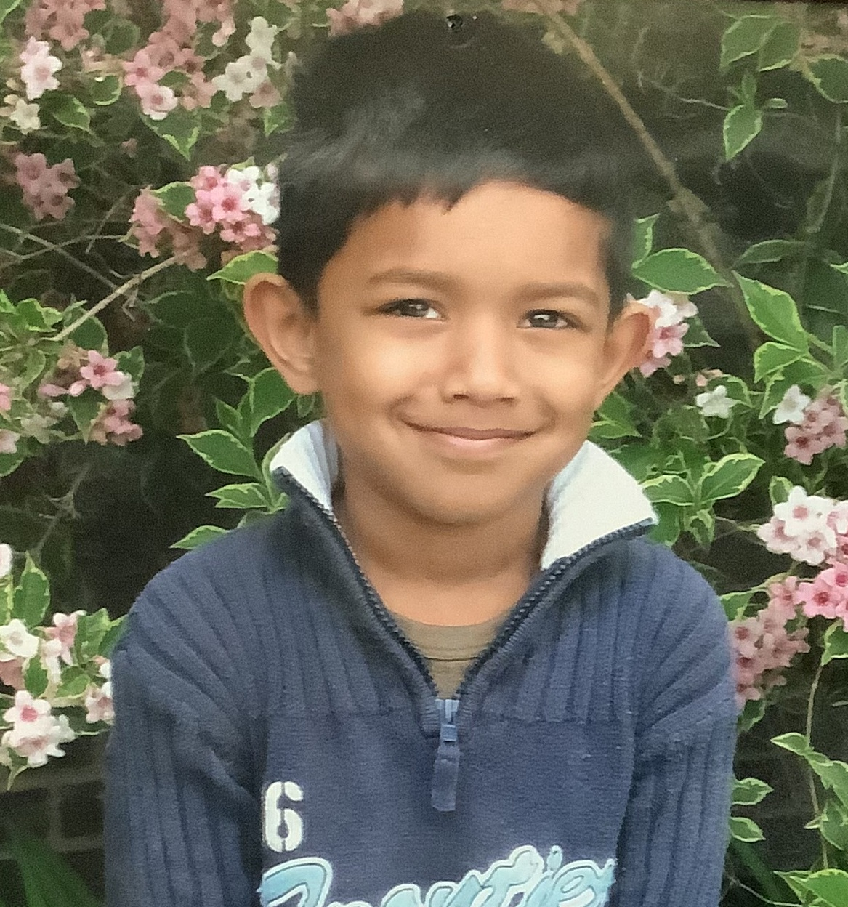

about munta
Second-year computer science student at Toronto Metropolitan
University. I strive for a disciplined work ethic and relentlessly
pursue my goals as a programmer and aspiring software developer. While
I've enjoyed creating numerous personal pet projects, my sights are set
on publishing a significant open-source project in the near future.
early life

I was born on August 20th, 2004, in the village of Feni, Bangladesh.
I lived there for 11 months and moved to Toronto where I've stayed
ever since. I remember at a young age I used my dad's old Windows XP
laptop, and loved watching Youtube and playing random flash games on
internet explorer (rip).
interests and hobbies
coding

I started coding back when I was in grade 10, learning Python as
my first programming language. I was addicted ever since. I primarily
code with:
- java
- python
- c
- vim (main editor)
- vscode (when-I'm-confused-with-vim editor)
favourite coding shenanigans to work on
- hackerrank for some competitive programming and practice
- dmoj for the same as above
- random scripts that improve my time and laziness
- a website that does a random silly thing
reading

I primarily read manga but I've been getting into some books
recently.
favourite manga

My goal for 2024 is to read 100 books, which I think is
possible?
video games
![coding meme]()
I'm not much of a gamer nowadays due to university, but I've
played my fair share of games, casually and competitively. However, I
am interested to get back into gaming just for the fun of it and to
join my friends.
history of games I've played
challanges and triumphs
Before getting to university, my senior year of high school was the
hardest I've ever worked. I had to work and work on courses I was not
comfortable with just to get into my dream university program, which I
fortunately made it in.
Things didn't get easier as I went through my first year of university
as a CS student. That year taught me work-life balance, time
management, and overall just perserverance.
Hackathons have been some of my favourite times, where I worked hours
upon hours to bring life to a project in a small time period. It was
stressful and tiring, but was fun to be with friends who shared similar
goals.